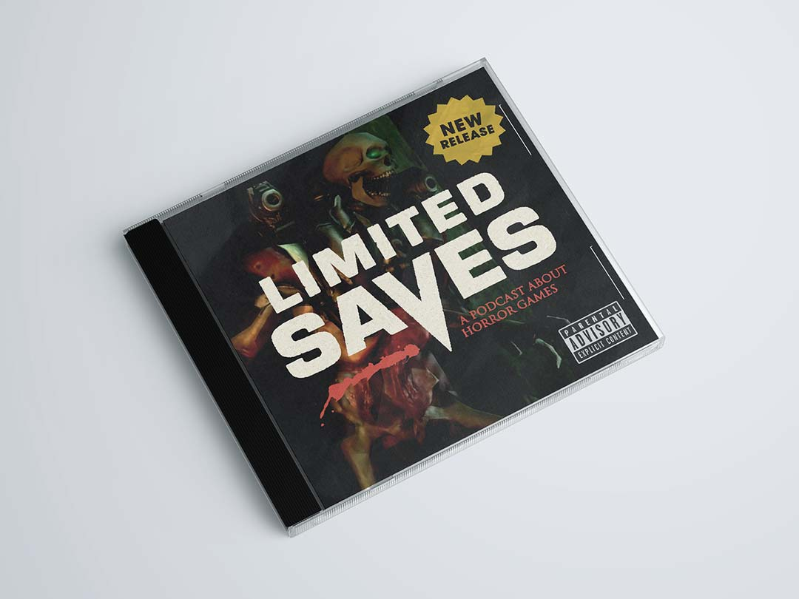
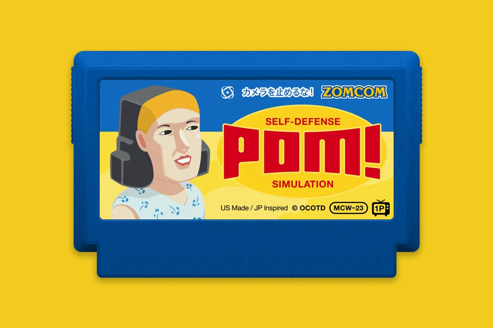
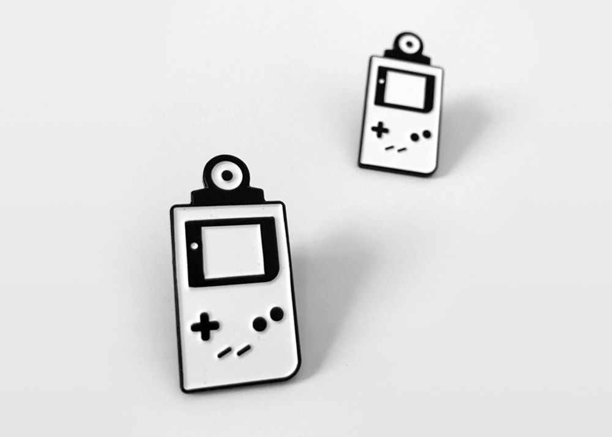
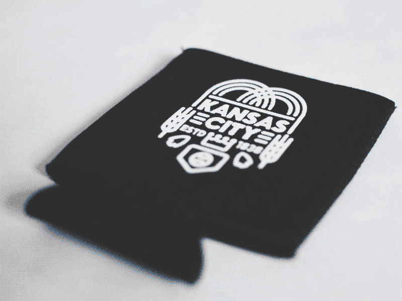
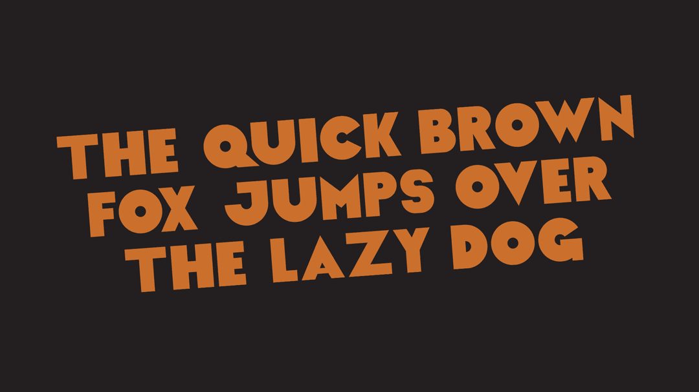

← Return to Homepage — Recycle Bin
Recycle Bin
Sometimes a project gets scrapped, but I still like it enough to show people. Here are a few examples of this rare occurance. I plan on adding more here, when the time is right, so check back if you want.
Limited Saves – A Defunct Podcast Idea

In mid-2022 I had the strange (but very common) urge to start a podcast. It was going to be about horror games and was brilliantly titled "Limited Saves." After creating a bunch of graphics, writing a script, and recording the pilot episode — I suddenly remembered that I'm a big introvert who doesn't like speaking very much. So, I scrapped the project altogether. However, I still like the overall concept and gained a new respect for the humble profession of podcasting.
POM! — A Scrapped Famicase Idea

This was going to be my submission to the 2023 Famicase exhibit. It's a mashup of "One Cut of the Dead" (my favorite movie) and Katamari Damacy. I'm really happy with how it turned out, but decided to go a different direction and create something wholly original instead.
Game Boy Camera Enamel Pins — Sold Out

I ran an Etsy shop for a couple years and sold this Game Boy Camera enamel pin, along with a couple of dad hats and patches. It was fun, but kinda more work than it was worth for me. I'm still really happy to have made an enamel pin, as they were all the rage for a while.
Kansas City Koozies — No Longer Available

I designed this for a now defunct drinkware accessories store. It's no longer available in this form, but at the time of writing, you can still get the design on a pint glass ↗ from Shakoolie.
Wadsworth — An Abandoned Font Idea

This is an idea for a font I had back in 2019. It has some obvious flaws and is clearly a rough draft, but I like the wonky, retro feel. It was going to be named Wadsworth, after Tim Curry's character in the movie "Clue."
Navigation
01. Limited Saves Podcast
02. POM! Famicase Concept
03. Game Boy Camera Pin
04. Kansas City Koozie
05. Wadsworth Display Font
Please Note
Sometimes dead is better.
Last Updated
2022.12.16